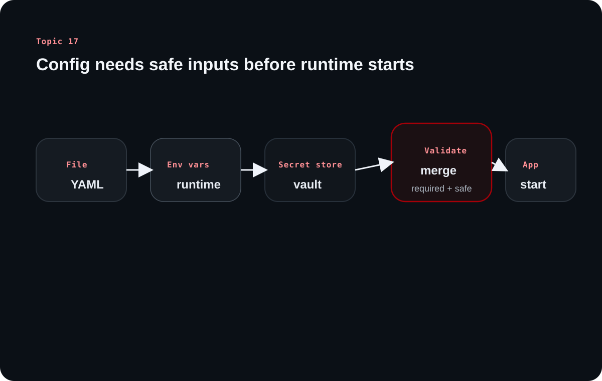

Topic 17 reframes configuration management as the control surface of a backend system. It is not only where keys live, but how one codebase behaves differently across environments without turning deployments into guesswork.
The source's central idea is that configuration determines runtime behavior. Secrets matter, but so do ports, timeouts, feature flags, logging levels, pool sizes, and business rules that should change without code edits.
Chapter 1
Configuration management is runtime behavior control, not just secret storage
The source opens by widening the definition so backend engineers stop treating configuration as only a credential problem.
Configuration is the DNA of how an application runs
The source describes configuration as the systematic way a backend stores, organizes, accesses, and maintains the settings that control its behavior. That includes startup behavior, logging, performance tuning, feature exposure, service connections, and security settings.
This is why configuration mistakes are so dangerous. A backend can have correct code and still behave incorrectly if the runtime settings are inconsistent, incomplete, or unsafe.
Different configuration types have different sensitivity and change patterns
The source separates application settings, database configuration, external service credentials, feature flags, infrastructure settings, security secrets, performance tuning, and business rules. This is important because not all configuration should be stored, reviewed, or rotated in the same way.
A feature flag is not as sensitive as a payment API secret, but it can still change user-visible behavior. A database password is sensitive, but so is a JWT secret that affects trust across the whole application.
Type
Examples
What matters most
Application settings
port, log level, timeout
Environment fit and clarity
Secrets
DB password, JWT secret
Secure storage and access control
Feature flags
rollout toggles
Fast safe behavior changes
Performance settings
pool size, thread count
Environment-specific tuning
Business rules
limits and policy values
Correctness and maintainability
Chapter 2
Production systems often combine multiple configuration sources with clear precedence
After defining configuration, the source explains where it comes from and why one storage style rarely solves everything.
Environment variables, files, key-value stores, and secret managers all have roles
Environment variables remain the most common cross-language option. Configuration files such as YAML or TOML help group related settings with more readability. Key-value stores and cloud-native secret managers add centralization, access control, encryption, and operational convenience for distributed systems.
The important lesson is not to memorize tools, but to understand why teams layer them. Local development wants convenience, while production wants secure, centralized, and auditable configuration access.
Hybrid configuration works only when precedence is explicit
The source mentions hybrid strategies where one source overrides another. That is a good pattern only if the precedence order is documented and validated, because hidden override rules create the very configuration chaos the system is trying to prevent.
A production-safe setup should make it obvious which source wins and what happens when a required value is missing.
Learning diagram

Production-grade config is not only about where values live, but about how different sources merge and pass through validation before runtime begins.
Chapter 3
Development, testing, staging, and production need different defaults for different reasons
The source emphasizes that one codebase can safely power many environments only when configuration expresses their different priorities clearly.
Every environment optimizes for a different goal
Development emphasizes developer speed and debugging. Testing emphasizes repeatability and automation. Staging tries to mirror production behavior closely enough to catch issues before release. Production prioritizes reliability, security, and performance under real load.
That means values such as pool sizes, log verbosity, and feature defaults should differ by design rather than by accidental drift.
Behavior should change through config, not through branching codebases
The healthy operating model is one application codebase with environment-specific configuration. That keeps deployments predictable and reduces the temptation to hardcode environment behavior directly into the source.
The source's broader point is operational agility: the more runtime behavior can be changed safely through config, the less risky ordinary deployment work becomes.
Chapter 4
Secrets, access control, rotation, and validation make configuration safe enough for production
The source becomes especially practical in its security section because configuration mistakes often become outages or breaches.
Never hardcode secrets and never give everyone full access to them
Hardcoded secrets turn source control into a risk surface. Cloud secret managers, encryption, and least-privilege access policies reduce that risk by controlling who can read what and when.
The source also recommends rotation. Credentials that live forever silently accumulate risk, especially in distributed systems with many services and operators touching the environment.
Validate configuration at startup so bad settings fail early, not during user traffic
Validation is one of the strongest production practices in the source. If a required variable is missing, malformed, or incompatible, the application should fail clearly before serving traffic.
That is much better than letting a misconfiguration survive until a payment flow, authentication path, or background job hits the broken value in production.
Clarified note
Configuration validation is a reliability feature. It turns hidden runtime surprises into early, explainable startup failures.
Chapter 5
Production-grade configuration needs ownership, documentation, and disciplined change habits
The final lesson is organizational as much as technical: configuration has to be managed deliberately.
Good config management reduces debugging chaos and deployment uncertainty
The source warns against scattered hardcoded values and inconsistent environment behavior. Once configuration is centralized and documented, backend teams can reason about why one environment behaves differently from another without reverse-engineering hidden defaults.
This is especially important in distributed systems where caches, databases, job queues, and external services all depend on configuration staying coherent.
Overall takeaway
What to remember
Configuration management is the operational layer that tells one codebase how to behave safely in many environments. Production quality comes from clear source precedence, secure secret handling, and strict validation before runtime begins.